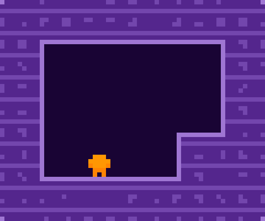
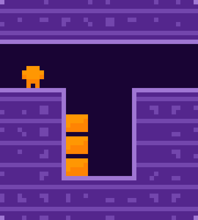
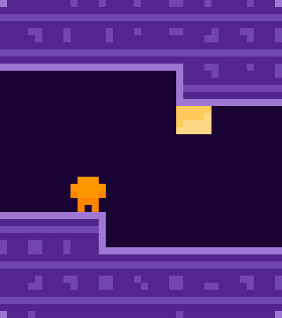
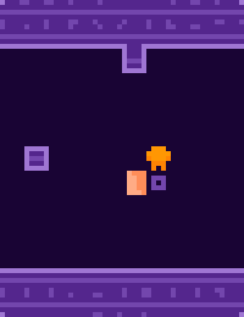
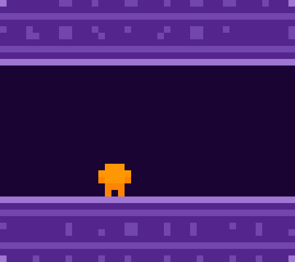
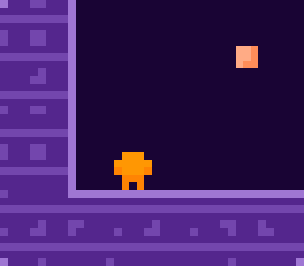
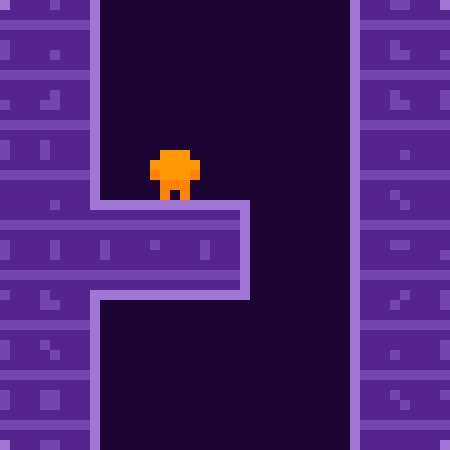
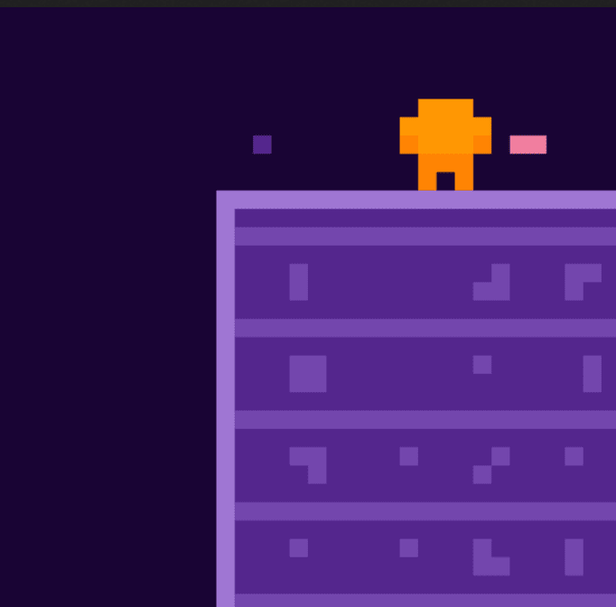
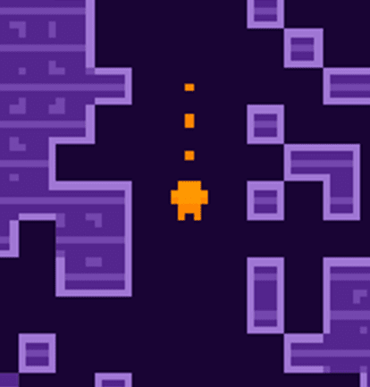

<!DOCTYPE html>
<html lang="en-US" prefix="og: http://ogp.me/ns#">
	<head>
		<meta http-equiv="content-type" content="text/html; charset=UTF-8"><meta charset="utf-8"><meta name="viewport" content="width=device-width, initial-scale=1.0"/><meta name="theme-color" content="rgb(25,4,52)"><link href="images/favicon-32x32.png" rel="icon" type="image/png"/><link href="images/favicon-32x32.png" rel="shortcut icon" type="image/x-icon"/><link href="images/180/gravirinth-legacy.png" rel="apple-touch-icon"/><title>Gravirinth Legacy</title><meta property="og:title" content="Gravirinth Legacy"/><meta name="description" content=" About Gravirinth Legacy According to legend, a forgotten civilization once mastered the power of gravity, which they used to travel across the Milky Way, in search for alien life. Eager at first to share their wisdom, soon they became aware that most alien life forms were not ready to receive t"/><meta property="og:description" content=" About Gravirinth Legacy According to legend, a forgotten civilization once mastered the power of gravity, which they used to travel across the Milky Way, in search for alien life. Eager at first to share their wisdom, soon they became aware that most alien life forms were not ready to receive t"/><meta property="og:image" content="https://pedropsi.github.io/images/512/gravirinth-legacy.png"/><meta name="twitter:image" content="https://pedropsi.github.io/images/512/gravirinth-legacy.png"><meta property="og:url" content="https://pedropsi.github.io/gravirinth-legacy.html"/><meta property="og:type" content="game"/><meta property="og:image:alt" content="Gravirinth Legacy"/><link rel="manifest" id="manifest" href='data:application/manifest+json,{"short_name":"Gravirinth_Legacy","name":"Gravirinth_Legacy_by_Pedro_PSI_2019","theme_color":"rgb(25,4,52)","background_color":"rgb(25,4,52)","display":"standalone","orientation":"landscape","icons":[{"src":"https://pedropsi.github.io/images/512/gravirinth-legacy.png","type":"image/png","sizes":"512x512","purpose":"any maskable"},{"src":"https://pedropsi.github.io/images/192/gravirinth-legacy.png","type":"image/png","sizes":"192x192","purpose":"any maskable"},{"src":"https://pedropsi.github.io/images/180/gravirinth-legacy.png","type":"image/png","sizes":"180x180","purpose":"any maskable"}],"description":"_About_Gravirinth_Legacy_According_to_legend,_a_forgotten_civilization_once_mastered_the_power_of_gravity,_which_they_used_to_travel_across_the_Milky_Way,_in_search_for_alien_life._Eager_at_first_to_share_their_wisdom,_soon_they_became_aware_that_most_alien_life_forms_were_not_ready_to_receive_t","categories":["entertainment","kids","games"],"dir":"ltr","lang":"en-US","start_url":"https://pedropsi.github.io/gravirinth-legacy.html?source=homescreen","scope":"https://pedropsi.github.io","serviceworker":{"src":"https://pedropsi.github.io/cacher.js"}}'/><link href="codes/lotus.css" rel="stylesheet" type="text/css"/>
		<script src="codes/core.js"></script>
		<script id="post">var v={POST:()=>`

${v.HEADER()}

<h3>Features</h3>
<ul>
<li>A deep labyrinth of spatial puzzles;</li>
<li>an exoarchaeology space expedition at the outskirts of the solar system;</li>
<li>a carefully hand-crafted, minimalist and mysterious atmosphere;</li>
<li>special features:</li>
<ul>
	<li>for <b>experienced</b> puzzlers: harder bonus levels; </li>
	<li>for <b>explorers</b>: some very well-hidden or almost unreachable orbs.</li>
</ul>
</ul>

<h2>Release notes</h2>

<h3>Schedule</h3>
<p class="centre">${v.TITLE_BOLD()} major update: January 2020, solving performance issues.</p>
<p class="centre">${v.TITLE_BOLD()} was first released after <b>February 28th 2019</b> and made freely available on June 21st 2019.</p>

<h3>Development log</h3>
<p class="centre">Accessible at ${AHTML("Gravirinth Log","gravirinth-log.html")}.</p>

<h2 class="trailer">Trailer</h2>
${v.TRAILER_LAUNCHER()}

${v.PRESS_TEXT()}

<h2>How to play</h2>
<p>Read the instructions below beforehand or skip them in favour of ${v.TITLE_BOLD()}'s interactive tutorial!</p>

<div class="alternator">
	<div class="alternate">
		<p>Navigate the ${v.TITLE_BOLD()} with ${HyperText("ArrowKeys")}. Step on <em>gravity beacons</em> to change your <em>specific gravity</em>! The controls change accordingly.</p>
		
	</div>
	<div class="alternate">
		<p>Pick any number of <em>blocks</em> with ${v.DOWN_KEY()}. Place them strategically  with ${v.UP_KEY()} to overcome obstacles!</p>
		
	</div>
	<div class="alternate">
		<p>Blocks also have their own <em>specific gravity</em>! Push blocks in your way or throw them horizontally to a higher platform!</p>
		
	</div>
	<div class="alternate">
		<p>What if two specific gravities <em>collide</em>? An <em>unstable gravity field</em> materialises, keeping everything in place. Untangle the collision, and it eventually vanishes!</p>
		
	</div>
	<div class="alternate">
		<p>Base communicates with you though a low-bandwidth intercom. In this way general tips and orientation hints may be given.</p>
		
	</div>
	<div class="alternate">
		<p>Finding the elusive <em>fourfold orbs</em> requires persistence and inventiveness. Try your best!</p>
		
	</div>
</div>

<h3>Additional Controls</h3>
<div class="alternator">
	<div class="alternate">
		<p>Your progress is reported continuously to base, so you may retrace your steps whenever you've done anything wrong. Press ${v.UNDO_KEY()} on your exopad.</p>
		
	</div>
	<div class="alternate">
		<p>A special record of your progress is created whenever you reach a save point. Press ${v.RESTART_KEY()} on your exopad to go back in time! This should work even if you quit the game for a while.</p>
		
	</div>
	<div class="alternate">
		<p>At the end of the expedition, Press ${v.ACTION_KEY()} on your exopad to call rescue, unless you prefer to collect any still accessible <em>fourfold orbs</em>...</p>
		
	</div>
</div>

${HyperText("GameInstructions")}
${v.COMMUNITY()}


<h2>Credits</h2>
${v.CREDITS_AUTHORSHIP()}
${v.CREDITS_MUSIC()}

<h3>Game Engine</h3>
<p>Made with ${v.A_PUZZLESCRIPT()} (the performant ${v.A_LANCE_PS_FORK()}) and ${A("game-bar")}!</p>
${v.SOURCE_TEXT()}

<h3>Special thanks</h3>
<p>To ${P("lance")} for develping ${v.A_LANCE_PS_FORK()} without which the game would not be playable in most devices!</p>
<p>To ${P("le slo")} for outstanding help during beta-testing!</p>


<h2>F.A.Q.</h2>
<h3>What does the name ${v.TITLE_BOLD()} mean?</h3>
<p>${v.TITLE_BOLD()} is a combination of the words <em>Gravity</em> and <em>Labyrinth</em>. It was coined by contemporary exoarchaeologists, because the  extrasolar name is unknown.</p>

<h3>How <b>deep</b> is the ${v.TITLE_BOLD()}?</h3>
<p>As far as the sonars can tell, the ${v.TITLE_BOLD()} is composed of a multitude of <em>interconnected chambers</em> of various sizes. Depending on how a chamber is defined, this number may vary, but probably <b>more than 32</b>. Some puzzles span <em>multiple chambers</em>, an some chambers comprise <em>multiple puzzles</em>.</p>

<h3>How many <em>fourfold orbs</em> can be collected in ${v.TITLE_BOLD()}?</h3>
<p>Certainly <b>more than 12</b>. The <em>exact number</em> eludes most exoarchaeologists.</p>
<p>The ultimate purpose of the <em>fourfold orbs</em> within the ${v.TITLE_BOLD()} is unknown, although it may contribute to a more accurate classification of alien life traits such as <em>inventiveness</em> and <em>persistence</em> or simply reward <em>exploration</em>.</p> 

<h3>What inspired ${v.TITLE_BOLD()}?</h3>
<p>The exoarcheology theme was inspired by Michio Kaku's <em>Future of Mankind</em>.</p>
<p>The game mechanic emerged naturally, drawing elements from ${A("pmgrp")} (basic platform mechanics), ${A("whirlpuzzle")} (idea of rotation and space theme) and ${A("tiaradventur")} (inventory, narrative system, management of a large word map), whose source codes are openly available.</p>
<p>Specific gravity is also a central theme of the game ${v.A_MANIFOLD_GARDEN()}.</p>

<h3>How is ${v.TITLE_BOLD()} ambitious from a coding point of view?</h3>
<p>The features below make a great game experience and are a puzzlescript coding challenge:</p>
<ul>
	<li>a large animated world map;</li>
	<li>a message selector, for storytelling and strategic hint placement;</li>
	<li>fourfold orb inventory banner, trailing along with the field of view;</li>
	<li>progressively revealing and activating unseen areas.</li>
</ul>
<p>Altogether, ${v.TITLE_BOLD()}'s map contains 5734 tiles, laid by hand.</p>
<p>Custom sound effects were linked to the puzzlescript engine, as well as a message console for storytelling and naming different map rooms.</p>

`};</script><script src="data/page.js"></script>
	</head></html>
	